Crypto Kesako ?
Fondamental : But du jeu
Les joueurs, tour à tour, complètent leur main avec des cartes organes et des cartes Magouilles.
Pour construire leur créature, les joueurs doivent poser 6 organes différents 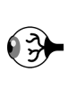 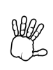 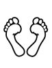 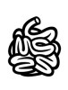 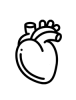 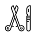 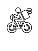 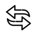 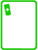 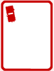
 (la monnaie du jeu), un précieux liquide qui les rend viables. Les organes ont des valeurs (bonus
(la monnaie du jeu), un précieux liquide qui les rend viables. Les organes ont des valeurs (bonus
Bienvenue au CryptoZooShow le Jeu
Après des siècles de domination humaine, les dernières espèces animales encore inconnues ont pris une décision radicale. Fini la science à outrance. Fini les classifications erronées. Fini les dissections et le formol. Les cryptides passent à l'action et organisent un fabuleux spectacle dénommé « cryptozooshow » en guise de représailles. Dans ce spectacle un seul but : jouer avec l'anatomie des êtres humains pour reconstituer un ersatz déglingué de l'homo sapiens. Alors, cryptoozologues trop curieux, abstenez vous si vous ne voulez pas être la prochaine victime de ce délirant Cryptozooshow !
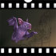
Chauve-souris
.
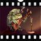
Monsieur Crapaud
.
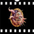
Tableau de collection
.
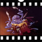
Groovy Tentaculette
.
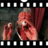
Beau Gosse
.
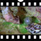
Inseminator
.
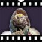
Monsieur Moche
.
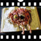
Monstrobook
.
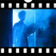
Mysterious Man
.
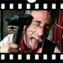
Complètement Marteau
.
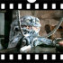
Tentaculette
Définition :
Cryptozoologie[1] : (du grec ancien κρυπτός / kruptós, « caché », ζῷον / zỗion, « animal », et λόγος / lógos, « étude », soit « étude des animaux cachés ») désigne la recherche des animaux dont l'existence est supposée sans pouvoir être prouvée de manière irréfutable. Ces formes animales sont appelées cryptides.
Show[2] : Spectacle mettant en scène des vedettes.
Cryptozooshow[3] : spectacle underground aussi amoral qu'amusant mettant en scène des cryptides anthropophobiques ayant un penchant assumé la dissection des disséqueurs.
Les joueurs sont des cryptides trafiquants d'organes humains. Leur but : donner vie à une drôle de créature en la composant des organes humains de meilleurs choix. Pour y arriver, il faudra abuser des actes chirurgicaux 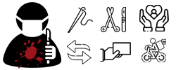.
Coups de scalpel injustifiés, plaisir sadique des coups bas : bienvenue au Cryptoozooshow.
Chaque cryptide dispose d'une créature, d'un frigo  (sa main) lui permettant de conserver au frais jusqu'à 4 organes, de ses fournisseurs d'organes (les pioches) et d'un accès à la poubelle à organes de la morgue
(sa main) lui permettant de conserver au frais jusqu'à 4 organes, de ses fournisseurs d'organes (les pioches) et d'un accès à la poubelle à organes de la morgue .
.